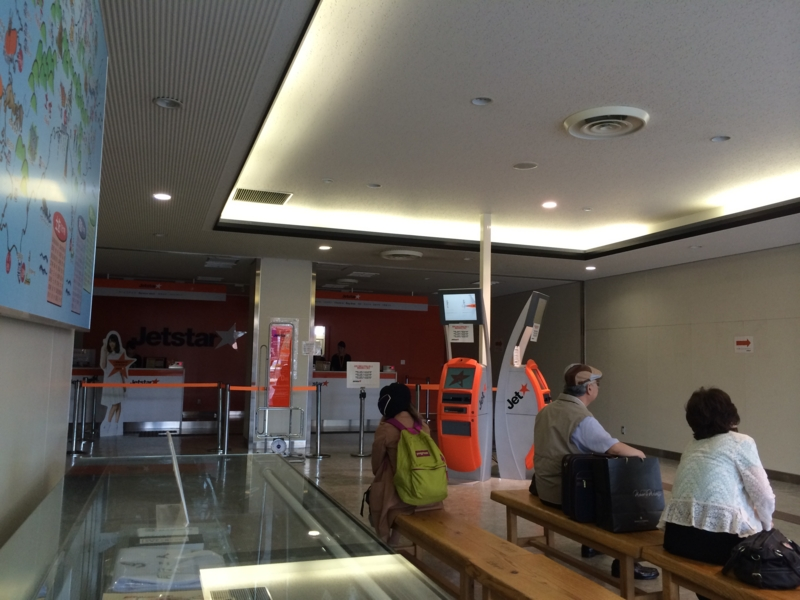
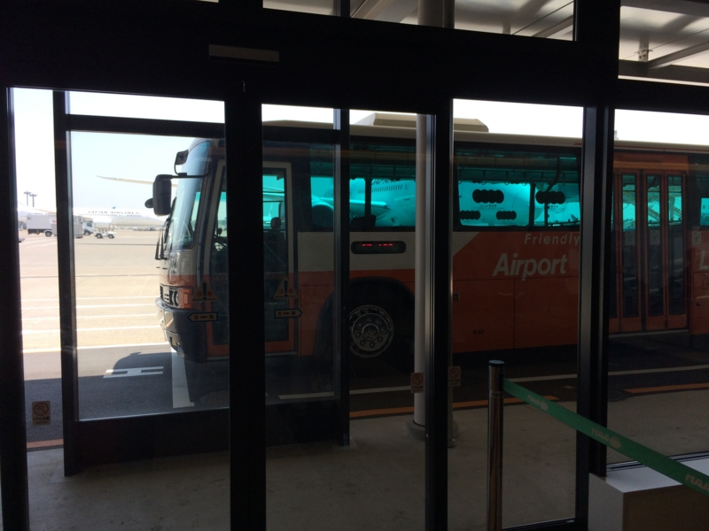
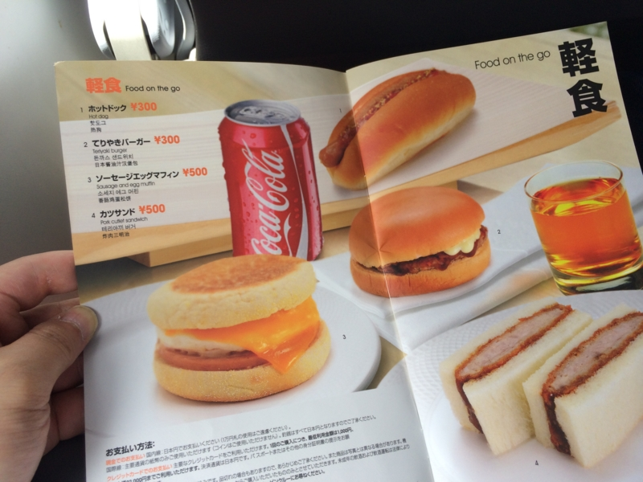
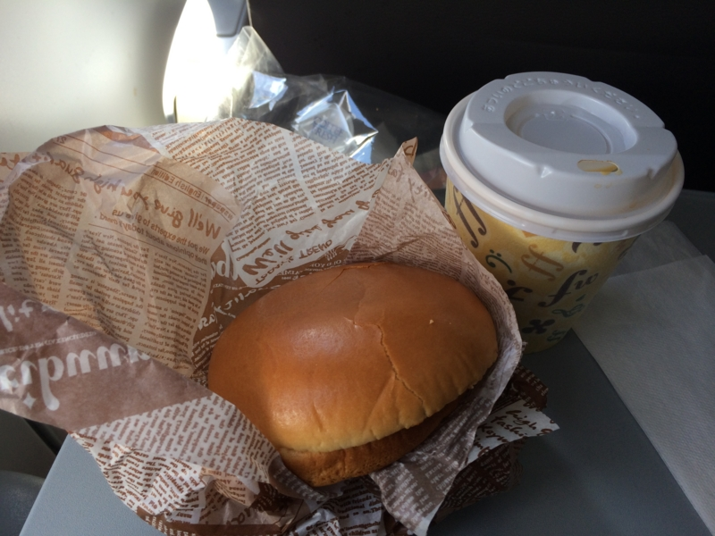
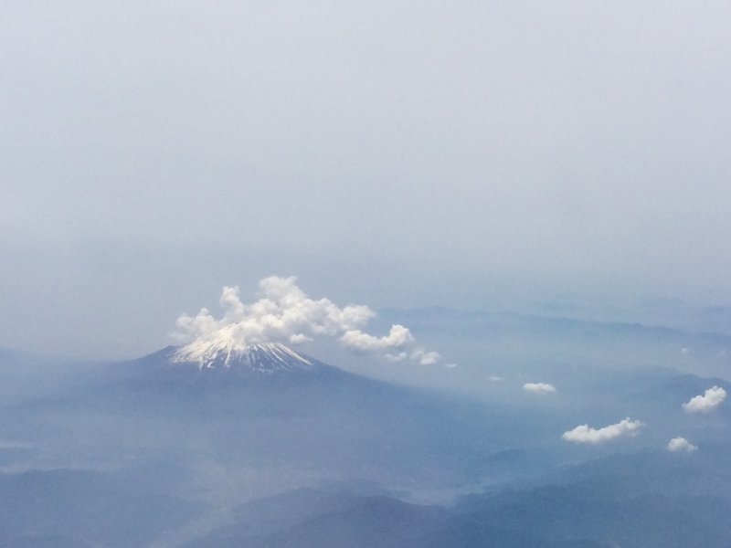

生まれて初めて LCC 乗ったった。
公開日：

今まで ANA しか乗ったことなかったけれど、今回の 松山 ⇔ 東京はジェットスターを使ってみた。いわゆる LCC というやつだ。
ちなみに、テキトー*1に調べたところ、お値段の違いはこんな感じ。
| ANA | 羽田 ⇔ 松山 | ¥33,090（～¥9,790 旅割75） | 6便/日 |
| ジェットスター | 成田 ⇔ 松山 | ¥4,690～¥18,990 | 3便/日 |
ANA は旅割を使えばだいぶ安くなるけれど、旅割75（搭乗日の75日前まで）を狙うのは大変だし、旅割45 の \15,000 ぐらいが現実的なところかな。
ジェットスターは日曜日の夜の便が ¥18,990 と高いけれど、それ以外ならば \6,000 程度で乗れる感じ。オプションを付ければもう少し高くなるけれど。
乗り心地
うわさに聞いた通り、シートはめっちゃ狭かった。でも、松山 ⇔ 東京のフライト時間は 1時間10分 程度なので、まぁ、それほどしんどくはない感じ。割とあっという間に着いてしまう。

成田空港では飛行機までリムジンバスで移動する*2。空港でリムジンバスに乗ったのは割りと久しぶりだったのだけど、個人的には苦痛ではなかった。座れなかったりするし、乗り降りがめんどくさくはあるけれど。
それよりも、チェックインカウンターが辺鄙なところにあるのが困った。これも慣れれば OK なのだろうけれど、初めて使う時には時間に余裕をもって到着するべきだろう。でなければ、自分みたいに全速力で走り回って汗だくで飛行機に乗る羽目になる。
機内サービス

Starter Plus（¥1,230）にしていたので、機内で使える 500 円のバウチャーがついてきた。この世界では、缶ビール1本 or コーヒー＋テリヤキバーガー の価値に相当する。
試しに、コーヒー＋テリヤキバーガー を頼んでみた。

期待通りのマズさで、ちょっとテンション上がった。機内食って、マズくてもノリノリで食えてしまうから不思議だ（自分だけだろうか）。「これだよ！ これ！ 俺が求めていたマズさは！」みたいな感じ。
個人的感想

行きしなは離陸直後から爆睡していたのだけど、途中で叩き起こされた。寝かせておいてほしかったのだけど、500円分のバウチャーがあったので仕方がない。寝ていたせいでバウチャーを使い逃したら、客によってはクレームを付けたりするだろうし。とはいえ、その時は500円のメシよりも睡眠を欲していたわけで……。ちょっとご機嫌斜めだった。
だからというわけではないけれど、旅割28（18,000円ぐらい）が買えるなら ANA のほうをチョイスしたいなぁ、と思った。なんか安心だし、キッチリしてるし。でも、急に東京に行く用事ができたときなんかは、安く乗れるジェットスターがあると心強いよね。潰れないでほしい。